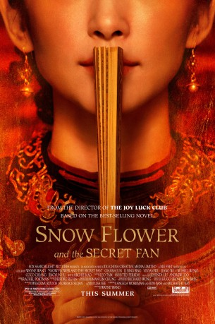
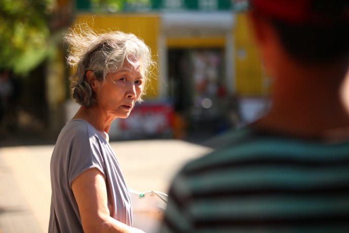

#7047 Der Seidenfächer
 
 IMDB-Wertung: 6.1 / 10
IMDB-Wertung: 6.1 / 10  Metascore: 0
Metascore: 0 
In 19th-century China, seven year old girls Snow Flower and Lily are matched as laotong - or "old sames" - bound together for eternity. Isolated by their families, they furtively communicate by taking turns writing in a secret language, nu shu, between the folds of a white silk fan. In a parallel story in present day Shanghai, the laotong's descendants, Nina and Sophia, struggle to maintain the intimacy of their own childhood friendship in the face of demanding careers, complicated love lives, and a relentlessly evolving Shanghai. Drawing on the lessons of the past, the two modern women must understand the story of their ancestral connection, hidden from them in the folds of the antique white silk fan, or risk losing one another forever.
Jahr: 2011
Dauer: 104 Minuten
FSK: 6
Land: China Studio: Senator FilmTonspuren:
Untertitel:
Auflösung: 1080p (1920x808) Größe: 7659 MB
Genre: Drama, Geschichte
Regisseur: Wayne Wang
Drehbuch: Angela Workman
Soundtrack:
Darsteller:
- Russell Wong als Bank CEO
 Bingbing Li als Nina / Lily
Bingbing Li als Nina / Lily- Archie Kao als Sebastian
- Ji-hyun Jun als Snow Flower / Sophia
- Coco Chiang als Anna
- Vivian Wu als Aunt
- Danping Shen als Lily's Mother
-  Zhong Lü als Lady Lu
- Xiaolin Lü als Yong Gang
 Wu Jiang als Butcher
Wu Jiang als Butcher- Liqiu Zhang als Butcher's Mother
 Hugh Jackman als Arthur
Hugh Jackman als Arthur- Hu Qing Yun als Mrs. Liao
- Shiping Cao als Mr. Wei
- Ruijia Zhang als Mrs. Wei
- Zhebing Gong als Professor
- Lilia Zhou als Nurse
- Congmeng Guo als Little Lily
- Yan Dai als Little Snow Flower
- Yulan Xu als Snow Flower's Mother
- Shiming Wang als Foot Binder
- Shouqin Xu als Lily's Father
- Ying Tang als Madame Wang
- Chen Tao als Da Lang
- Feihu Sun als Master Lu
- Mian Mian als Claire
- Zhoubo Fang als Mr. Liao
- Xiao Hu Ding als TV News Anchor
- Li Qiang als Gao Kao Official
- Andy Gao als Bartender
- Ying Lin als Lotus
- Hui Xia Li als Cousin Yan's Mother
- Pei Jin als Landlady
- Fan Hua Meng als Bathhouse Clerk
- Rongyi Qu als Spring Moon, 15 years old
- Yancen Zhou als Lily / Nina Double
Datei: X:\HD-Eastern-Modern(N-Z)\Seidenfächer, Der (2011, FSK6, 1920x808).mkv seit 18.09.2017
Festplatte: HD Eastern+Western
 Es gibt insgesamt 76 Filme in der Gruppe 'HD-Eastern-Modern(N-Z)'
Es gibt insgesamt 76 Filme in der Gruppe 'HD-Eastern-Modern(N-Z)'